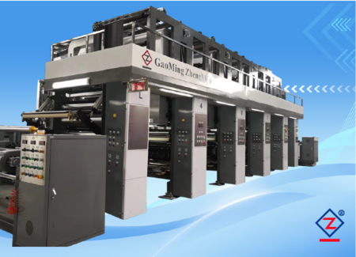

Màng in nhiều màu
PVC, PP, PET, BOPP dạng cuộn
Dùng cho vật liệu bao bì, vật liệu trang trí, màng mềm/cứng và giấy mỏng cần in liên tục.
Đọc cách chọn máy inThiết bị dành cho nhà máy cần in 4-12 màu trên màng PVC, PP, PET, BOPP, giấy mỏng và vật liệu trang trí dạng cuộn.

Máy in ống đồng trục điện tử phù hợp cho nhà máy cần in nhiều màu trên vật liệu dạng cuộn, đặc biệt khi sản phẩm yêu cầu chồng màu chính xác, tốc độ ổn định và vận hành liên tục trên PVC, PP, PET, BOPP hoặc giấy mỏng.
| Vật liệu in | PVC, PP, PET, BOPP, giấy mỏng, màng mềm/cứng |
|---|---|
| Số màu | Có thể tư vấn cấu hình 4, 6, 8, 10 hoặc 12 màu theo sản phẩm. |
| Khổ in | 500 - 4000 mm |
| Đường kính lô in | 200 - 800 mm |
| Tốc độ máy | 5 - 200 m/phút |
| Nguồn điện | 380 V + N, 50 Hz |
| Tổng công suất | 80 kW |
| Truyền động | Trục điện tử servo nhập khẩu như Mitsubishi, hộp giảm tốc độc lập nối trực tiếp với motor, phản hồi nhanh, giúp tăng độ chính xác chồng màu. |
|---|---|
| Hệ thống lực căng | Điều khiển lực căng hoàn toàn tự động. |
| Hệ thống chồng màu | Tự động canh màu ngang và dọc, có đầu dò quang điện nhập khẩu. |
| Cơ cấu ép in | Cơ cấu ép in định vị trực tiếp trên ray. |
| Cơ cấu dao gạt | Kiểu hộp chạy trực tiếp trên ray, dao gạt khí nén hai xy lanh, chỉnh bốn hướng. |
| Truyền mực | Lô truyền mực, thao tác nhanh, tiết kiệm mực và giữ chất lượng in ổn định. |
| Nối liệu | Hai trạm, xả/thu cuộn tích hợp, đổi liệu tốc độ cao không dừng máy, dao cắt tự động và lực căng tự động. |
| Điều khiển vận hành | PLC toàn máy, tủ điện tập trung, màn hình cảm ứng HMI. |
| Điều khiển nhiệt | PID kỹ thuật số độc lập, lò sấy bán treo và hệ thống sấy độc lập, sấy nhiệt thấp gió mạnh. |
| Gia nhiệt | Có thể chọn khí gas hoặc dầu truyền nhiệt tiết kiệm điện. |
| An toàn | Nút dừng khẩn cấp và thiết bị bảo vệ an toàn. |
| Khác | Canh biên servo siêu âm; xả/thu cuộn trung tâm tự động hai trạm, có dao cắt tự động. |
Người mua nên gửi mẫu in hoặc ảnh thành phẩm, vì số màu và hệ thống sấy phụ thuộc trực tiếp vào sản phẩm in.
Dùng cho vật liệu bao bì, vật liệu trang trí, màng mềm/cứng và giấy mỏng cần in liên tục.
Đọc cách chọn máy in
Cần xác nhận số màu, mẫu hoa văn, độ chính xác chồng màu và công đoạn sau in như cán màng hoặc phủ.
Xem ứng dụng màng PVC
Máy in cần phối hợp với hệ thống lực căng, sấy, thu cuộn và công đoạn ghép/phủ phía sau.
Xem thông tin cần gửiĐây là dòng máy in dùng trục in khắc lõm, phù hợp in liên tục trên vật liệu dạng cuộn như PVC, PET, BOPP, PP, PE và giấy mỏng.
Số màu phụ thuộc mẫu in, lớp màu nền, độ phức tạp của hoa văn và yêu cầu sản phẩm. Khi hỏi giá nên gửi mẫu in hoặc ảnh thành phẩm để kỹ thuật tư vấn số cụm màu phù hợp.
Có. Cấu hình máy cần xác nhận theo vật liệu, khổ rộng, tốc độ, phương thức gia nhiệt, yêu cầu thu/xả cuộn và mức tự động hóa.
Nên kiểm tra chồng màu, độ ổn định khi tăng/giảm tốc, sấy, lực căng, thu cuộn, thao tác đổi cuộn, tủ điện và chất lượng mẫu in trên vật liệu thật.
| Vật liệu | Cho biết loại vật liệu chính, ví dụ PVC, PP, PET, BOPP, giấy mỏng, giấy melamine hoặc màng trang trí. |
|---|---|
| Khổ rộng | Gửi khổ vật liệu đầu vào, khổ in và khổ thành phẩm mong muốn. |
| Số màu | Gửi mẫu in hoặc số màu dự kiến, ví dụ 4 màu, 6 màu, 8 màu, 10 màu hoặc 12 màu. |
| Tốc độ mong muốn | Nêu tốc độ sản xuất dự kiến hoặc sản lượng mỗi ngày. |
| Yêu cầu in | Chồng màu, loại mực/dung môi, sấy, lực căng, thu cuộn và công đoạn sau in. |
| Yêu cầu nhà máy | Nguồn điện, không gian lắp đặt, thông gió, phương thức gia nhiệt và yêu cầu tự động hóa. |